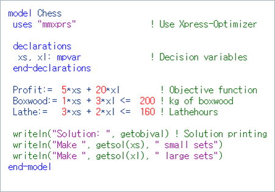

사용자는 Xpress-Mosel로 문제를 공식화하고, 이렇게 공식화된 문제를 Xpress-Optimizer를 사용하여 풀고, 분석을 위해 특별히 설계된 프로그래밍 언어를 사용하여 결과를 분석할 수 있습니다. Mosel 프로그램 언어에 의해 공식화된 문제는 컴파일 되고 실행됩니다. Mosel 프로그램은 대화형 방식으로 실행하는 것이 가능하며 응용 프로그램에 통합될 수 있습니다.

Mosel 언어는 쉽게 배우고 사용할 수 있습니다. 최적화 문제를 처음부터 개발하고 다른 사람이 쓴 문제를 이해하여 문제를 해결하고 유지하는 것이 용이합니다. 비주얼 개발 환경인 Xpress-IVE 또한 이 과정을 간단하게 해줍니다. 임의의 범위, 인덱스 세트 및 희소 객체(sparse object)를 완벽하게 지원하고 있기 때문에 크고 복잡한 문제를 명확하게 하고 간결하게 하여 특정 데이터 전체를 독립적으로 표현할 수 있습니다.
Mosel은 확장 라이브러리를 포함하고 있으며 Mosel 프로그램 최적화 구문을 통해 Xpress-Optimizer를 직접 제어할 수 있습니다. 또한 ODBC 데이터 드라이버가 제공되며 사용자는 각종 데이터베이스 및 스프레드 시트에 직접 인터페이스하고, 이를 통해 데이터를 직접 가져오거나 내보낼 수 있습니다.
Xpress-BCL은 응용 프로그램에서 문제를 구축하기 위한 객체 지향 라이브러리 입니다. Step by step 방식을 사용하여 변수를 추가하고 제약 식을 추가하는 기
능을 가지고 있습니다. 개발자는 C / C++ 또는 Java 프로그램에서 이를 호출하여 순차적으로 전체 문제를 구축합니다. 문제가 정의되면, Xpress-Optimizer를 사용하여 해결합니다. 또한 BCL 기능 개발자는 응용 프로그램에서 직접 솔루션 에 액세스할 수 있습니다.
물론, Xpress-Optimizer에 직접 문제를 로드 할 수 있습니다. 또한 사용자는 업 계 표준의 MPS 행렬과 LP 행렬을 사용하여 파일에서 문제를 로드 하거나 응 용 프로그램에서 직접 호출 기능을 사용하여 문제 전체를 로드 할 수 있습니다.
이러한 4 가지 방식의 구체적인 예, 또는 이러한 방식이 가진 장단점에 대해서는 Xpress-mosel을 참조하시기 바랍니다.